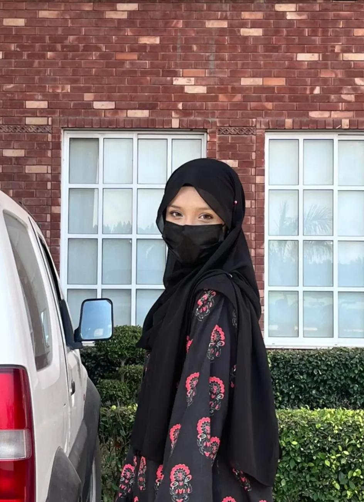
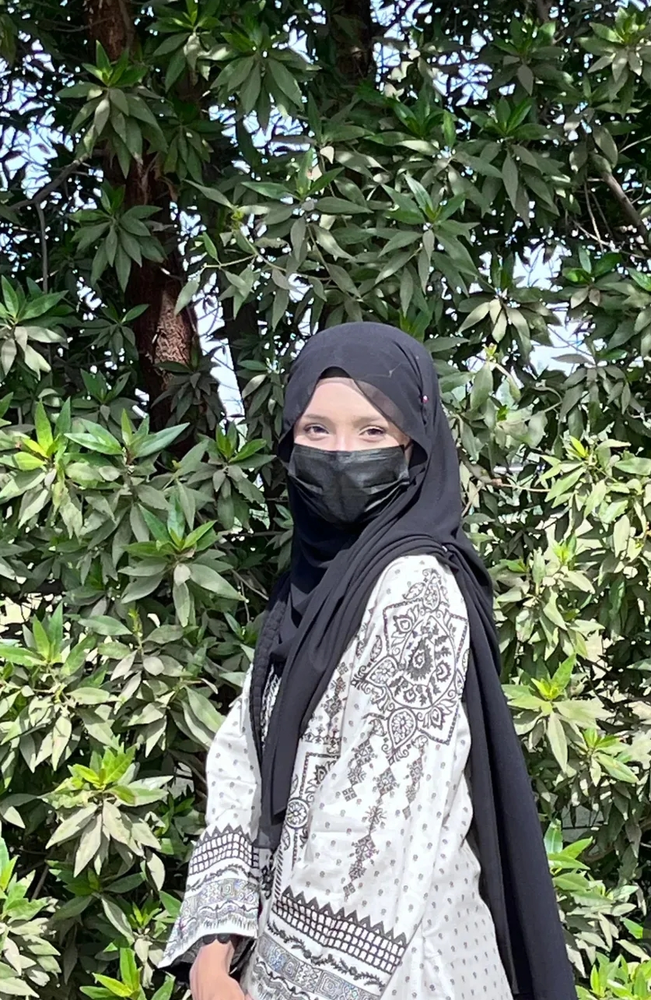
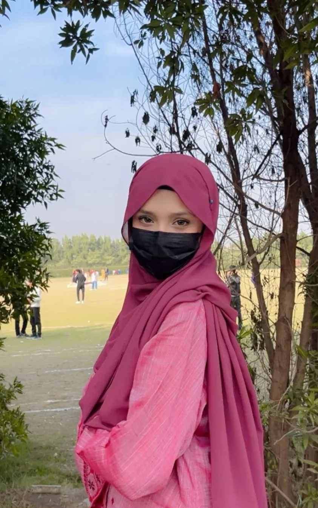

Yeh letter thora sa random lag sakta hai… lekin kabhi kabhi random cheezain hi interesting hoti hain. Honestly mujhe nahi pata ke aap mujhe notice karti hain ya nahi… lekin maine aapko kaafi dafa notice kiya hai. Kabhi ground mein walk kartay huay, kabhi corridor mein quietly chalti hui, aur kabhi bench par apni friends ke sath beth kar baatein karti hui. Aur ek baat… Aapki eyes… honestly bohat hi zyada pyari hain. Itni expressive ke mask ke bawajood bhi sab kuch keh deti hain.
Ajeeb si baat hai… Pehle jab bhi aap bench par hoti thi usually aapki friends aapke sath hoti thi. Lekin aaj kal aksar aap akeli hoti hain. Maybe kuch hua ho ya maybe sirf coincidence ho. Bas umeed karta hoon ke sab theek ho. Aur ek funny si baat bhi notice ki hai… Mask shayad sab log safety ke liye pehente hain lekin honestly lagta hai mask specially aapke liye design hua hai. Because even with the mask… aapki eyes sab attention le leti hain.



Ek random sa question… Kya aap doctor ban rahi hain ya medical field mein ja rahi hain? Bas curiosity thi.
Sach bataun? Maine apples khana chor diya hai.
Kyunki kehte hain... "An apple a day keeps the doctor away." Aur honestly... main aapse door rehna nahi chahta.
Agar aap yahan tak letter parh chuki hain toh shayad iska matlab hai ke aapne isey ignore nahi kiya. Toh ek chhoti si request thi… Kya follow back mil sakta hai? Taa ke mujhe pata chal jaye ke aap yahan tak poora letter parh chuki hain.